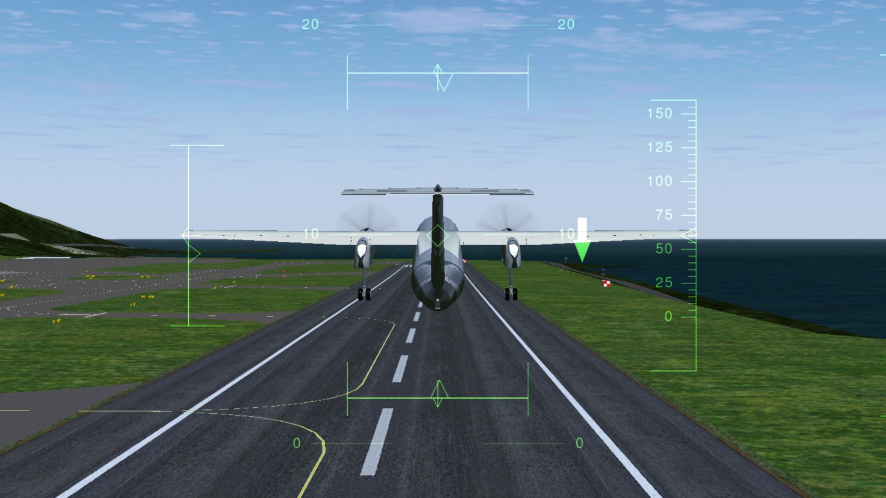

2022
Simulating electric aircraft flights in a domestic New Zealand environment
16 May, Victoria University
Master’s student Cameron Shellard has developed a test system that can simulate electric aircraft flights around New Zealand, relay the performance of the battery, and predict the amount of charge required to perform a flight.
Why are we still burning coal?
May, New Zealand Geographic
Institute Principal Scientist Dr Chris Bumby says we could be making high-quality steel with hydrogen instead.
Tech Bootcamp with Tauhara North No. 2 Trust
May 9, Facebook
Tauhara North Tech BootcampRecently Year 12 and 13 rangitahi from Tauhara North participated in Paihau—Robinson Research Institute’s Tech Bootcamp. It was a fun-filled week where they built self-driving robots, made aspirin, used liquid nitrogen to make ice cream, and much more. This event was run in conjunction with Tauhara North No. 2 Trust. The Tech Bootcamps are designed to give rangitahi a chance to speak to scientists and engineers about where a career in STEM could lead to, and to get a taste of university life. Read more about Paihau: https://www.wgtn.ac.nz/robinson
Posted by Wellington Faculty of Engineering on Sunday, May 8, 2022
Dr Chris Bumby presented his research to Minister James Shaw
May 3, Facebook
KiwiNet and Hot Lime Labs recently hosted an event with Hon James Shaw, Minister for Climate Change and Associate...
Posted by Wellington Faculty of Engineering on Monday, May 2, 2022
Tech bootcamp to inspire rangatahi (the younger generation) into science pathways
May 2, Facebook
Tahlia Crabtree from Paihau—Robinson Research Institute spoke on Te Ao Māori News about the recent Tech Bootcamp held...
Posted by Wellington Faculty of Engineering on Sunday, May 1, 2022
Tech bootcamp to inspire rangatahi (the younger generation) into science pathways
29 April, Te Ao Māori News
Nine year-12 and year-13 students, from Tauhara, north of Taupō, recently attended a tech bootcamp at Victoria University of Wellington. Teaomaori.news spoke to coordinator Tahlia Crabtree, from the Robinson Research Institute of Victoria University about the programe.
New partnership to develop space technology
8 April, Victoria University
In a new relationship with the German Aerospace Centre (DLR), researchers from the Robinson Research Institute are using their expertise in magnetic fields and high-temperature superconductors to develop technology for use in space.
Appointments to Science Board confirmed
4 April, Ministry of Buisness, Innovation & Employment
Robinson Research Institute Director Professor Nick Long has been appointed to the Science Board of the Ministry of Buisness, Innovation & Employment. The Science Board is responsible for making independent investment decisions for the Endeavour Fund and the National Science Challenges.
Fusion energy waiting in the wings
26 March, Newsroom
Fusion energy is attracting private investment on the billion-dollar scale for the first time in history. PhD Candidate James Rice explains how a brighter future could be just around the corner.
Realistic Simulations of All-Electric Flights
14 March, Robinson Research Institute
Master's student Cameron Shellard has developed a hardware-in-the-loop setup for simulating all-electric aircraft flying New Zealand domestic routes. The scaled-down motors and battery pack provide a close representation of how a full-sized system will perform under various flight profiles. Determining the optimal ways of employing electric aircraft will be extremely beneficial to our external partners going forward as they consider adopting this emerging technology.
Tech Bootcamp Inspires Students
3 March, Victoria University

The Paihau—Robinson Research Institute’s Tech Bootcamps open up pathways to STEM careers for Māori and Pasifika students.
A breakthrough ‘next step’ in Aotearoa’s steel industry and its transition to a low carbon future
23 February, HERA

HERA has been tracking research being done by Dr Chris Bumby and team at the Robinson Research Institute for some time now. HERA member, New Zealand Steel, has announced funding to accelerate the development of a pilot-scale reactor for this process located at New Zealand Steel’s Glenbrook site.
Accelerating research into low-emissions steelmaking
16 February, Wellington Univentures
Researchers at Victoria University of Wellington's Robinson Research Institute collaborate with Wellington UniVentures and New Zealand Steel to decarbonise steel production.
New Zealand – DLR frontier Joint Research Programme funding announced
4 February, Victoria University
Spacecraft heat shielding technology and ‘green’ in-space propulsion systems at Robinson Research Institute are among eight collaborative research projects announced by MBIE and the German Aerospace Centre (DLR).
2022 Tech Bootcamp
16-21 January, Robinson Research Institute


In January, Robinson Research Institute hosted its third Tech Bootcamp for Year 12-13 Māori and Pasifika students, in conjuction with our partners at Ferrier Institute, Victoria University Faculties of Engineering and Science, Callaghan Innovation and GNS Science. The Bootcamps aim to inspire young people to pursue a career in science and engineering. For more information contact rri‑postgrad@vuw.ac.nz
High-speed bearing demonstrated
21 January, Robinson Research Institute
PhD candidate Mohammad Siamaki has demonstrated an experimental superconducting bearing operating at over 89000 rpm. This is believed to be a New Zealand record. Superconducting bearings use magnetic forces to levitate a spinning shaft in free space, thereby eliminating mechanical friction.